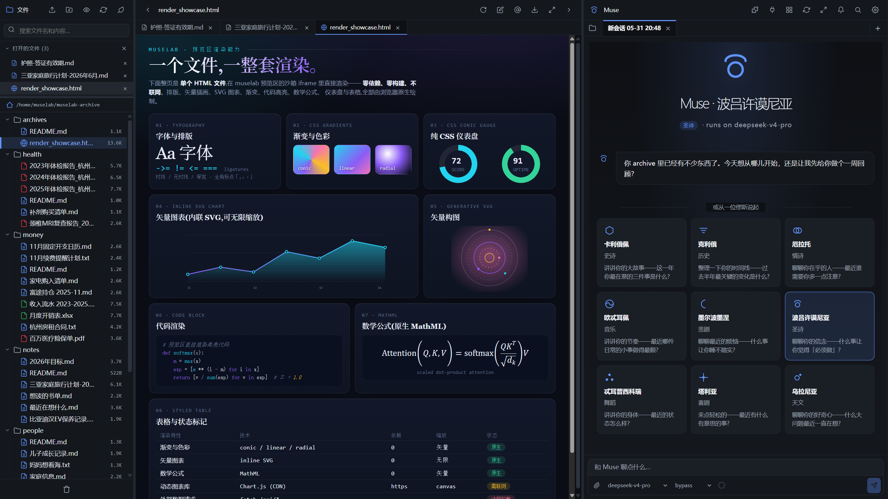
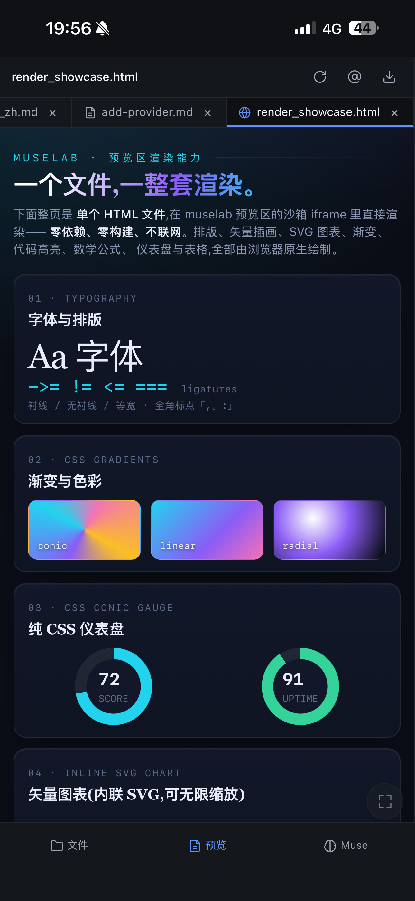

职业规划、体检报告、资产配置、家庭信息——
全丢进一个目录，Muse 全部记住，跨领域随问随答。
自托管的多模型 AI 工作台。原文件直接当上下文——不上云、不切片、不向量化。八家厂商的模型共用同一套 agent loop，全程跑在你自己的机器上。


报告、表格、图表即写即渲染，多端同步会话
建档：体检单、保单、各种记录直接拖进归档，Muse 自动归进 health / money / notes / work 并生成 README——空目录几秒变成有结构的工作台。
调用：一句话让 Muse 规划一周三亚旅行，它跨归档调出证件有效期、预算、笔记，直接排出一份带预算的完整行程。
投资、旅行、笔记都在同一个归档里。问一句“下个月关西玩一周，预算够吗”，Muse 检索整个归档、跨目录取出相关文件，一次答完。
把体检 PDF 交给它，Muse 通读全文、挑出异常指标、按机制配补剂，再生成一份可存档的 HTML 报告——自动落回归档，成为新的上下文。
同一台服务器、同一个会话、同一份归档，多个设备一起聊。
把常跑的 prompt 存成每天 / 每周 / 一次性任务，到点 Muse 自动读归档、跑工具、出结果，任务完成推送手机通知。
RAG 先切片、再向量化、最后检索——每一步都在丢语义。muselab 中原文件就是上下文，agent 直接读写，零语义损失。
底部工具栏一个下拉框就能切换。MCP / Skills / Subagent 在每家模型上行为一致——由 Claude Agent SDK 直接驱动，不是协议转接。
不是 IDE，不是 RAG，不是插件市场——而是把私人档案当作直接上下文的 AI 工作台。
| muselab | LobeChat | AnythingLLM | claudecodeui | Claude Code | |
|---|---|---|---|---|---|
| Self-hosted | ✓ | ✓ | ✓ | ✓ | — |
| Full agent SDK · all models | ✓ | chat only | RAG focus | Claude only | Claude only |
| Reuse Claude Pro sub | ✓ | — | — | ✓ | ✓ |
| Archive as 1st-class context | ✓ | — | vectorized | codebase | codebase |
| Mobile PWA + push | ✓ | ✓ | — | resp | — |
| No build step | ✓ | npm | docker | ✓ | n/a |
Linux · macOS · WSL2 · Docker。约 3 分钟装好，自动注册自启动服务。